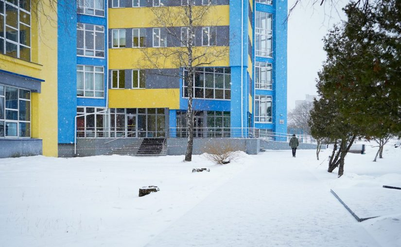
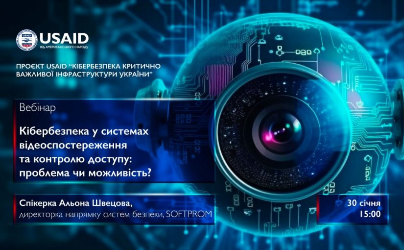

До уваги здобувачів освіти та співробітників університету!
🚨До уваги здобувачів освіти та співробітників університету ‼️ Сьогодні в Житомирській політехніці відбулося позачергове засідання ректорату. На порядку денному було питання початку ІІ навчального семестру 2023/2024 н.р., що має розпочатися в понеділок 05 лютого. Рішенням ректорату університету, у зв’язку зі складною безпековою ситуацією та зростанням захворюваності ГРВІ в регіоні, освітній процес в університету з 05 лютого до 18 лютого буде відбуватися для всіх здобувачів освіти денної форми навчання з використанням технологій дистанційного навчання.
Візит Голови Наглядової ради Національного авіаційного університету Петра Чернишова

Насичений день робочими зустрічами завершився візитом до Житомирської політехніки Голови Наглядової ради Національного авіаційного університету Петра Чернишова. Поділилися з колегами досвідом провадження університетської системи «Електронний університет». Проректори та декани проговорили робочі моменти використання електронної системи управління закладом вищої освіти, кожен на своєму рівні управління навів конкретні приклади щодо оптимізації паперової роботи, наявного потенціалу до виконання завдань та прийняття рішень. Презентували функціонал окремих модулів університетської системи «Електронний університет», а також можливості електронного кабінету як студента, так і викладача.
Вебінар «Кібербезпека у системах відеоспостереження та контролю доступу: проблема чи можливість?» від проєкту USAID Cybersecurity Activity
З початку 2024 року проєкт USAID Cybersecurity Activity (USAID «Кібербезпека критично важливої інфраструктури України») розширив можливості для професійного розвитку університетських здобувачів вищої освіти за рахунок започаткування серії фахових вебінарів про секторальні особливості кібербезпеки. Першим заходом цієї серії став проведений 30 січня 2024 року вебінар «Кібербезпека у системах відеоспостереження та контролю доступу: проблема чи можливість?», спікером на якому була директорка напрямку систем кібербезпеки компанії Softprom Ukraine Альона Швецова.